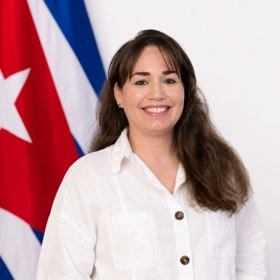

Presidenta
Amelia Calzadilla Hernández
España
Traductora, activista y líder política cubana y fundadora del Partido Liberal Clásico Cubano. Exiliada en Madrid desde 2023 tras la persecución política sufrida por sus denuncias sociales en la isla, dedica su labor internacional a la defensa de los derechos humanos, la visibilización de los presos políticos y la articulación de una alternativa democrática y liberal para el futuro de Cuba.